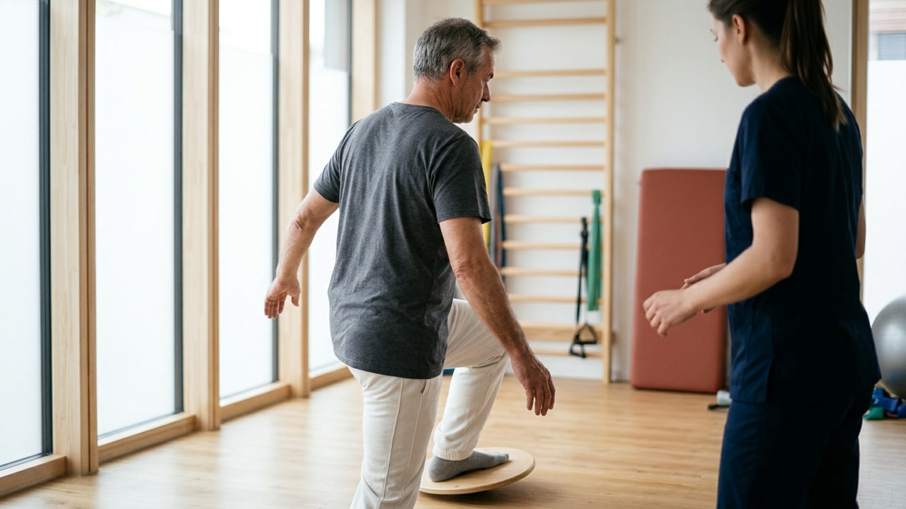
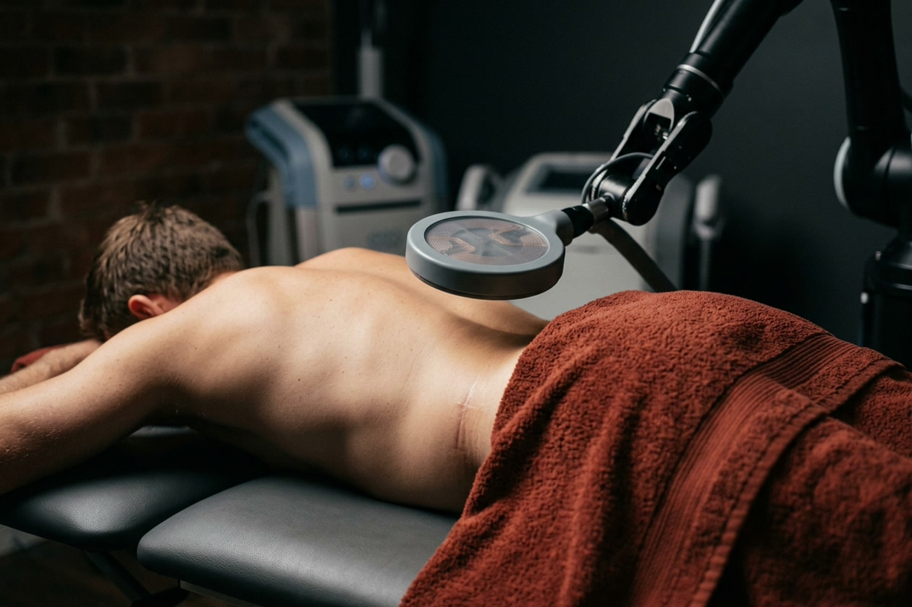
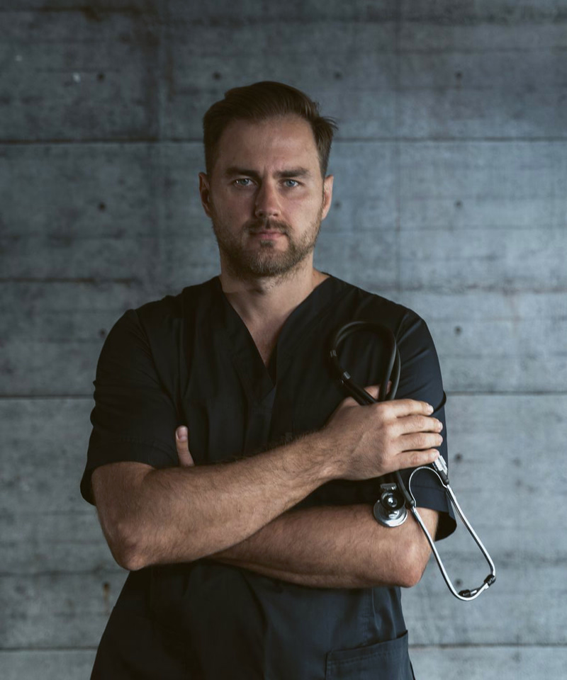

KIO
Kinesiología y traumatología
- Prepagas y particulares
- Consultorios y gimnasio de rehabilitación
- RPG y fisioterapia
Kinesiología, traumatología y rehabilitación en Vicente López. Prepagas y particulares.

Servicios
De la consulta con el traumatólogo al alta en el gimnasio.
Deslizá para ver los 6 servicios
1 / 6
Tecnología
Sistema súper inductivo BTL: estimulación electromagnética que acelera la recuperación.

Un espacio integral
Kinesiología y traumatología
Rehabilitación integrada
Medicina del sueño
Turnos
kiosalud.geblix.com, desde el celular o la compu.
Con tu nombre, DNI y celular.
La especialidad y el turno que mejor te quede.
Con tu DNI, y liberás el turno para otro paciente.
Nos mudamos
Un espacio amplio y todo nuevo. Antes estábamos en Maipú 1669.
Equipo

Preguntas frecuentes
Desde kiosalud.geblix.com. Te registrás una vez con nombre, DNI y celular, y después reservás o cancelás con tu DNI.
Sí, y también en forma particular. [Completar lista de prepagas.]
Av. Maipú 1736, primer subsuelo, dentro de COTO, Vicente López.
Sí, al 11 6256-7798, solo por mensaje de texto.
[Completar: orden médica, credencial, estudios, ropa cómoda.]